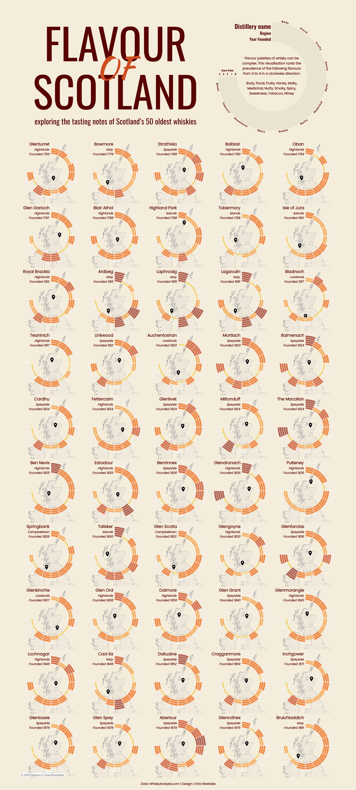
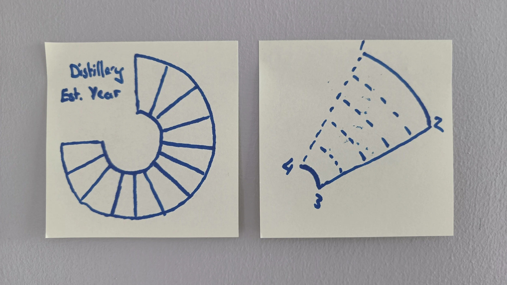
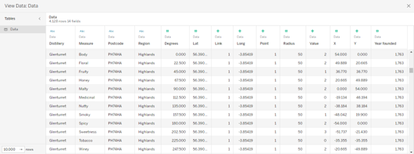
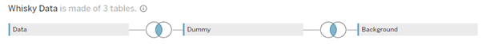
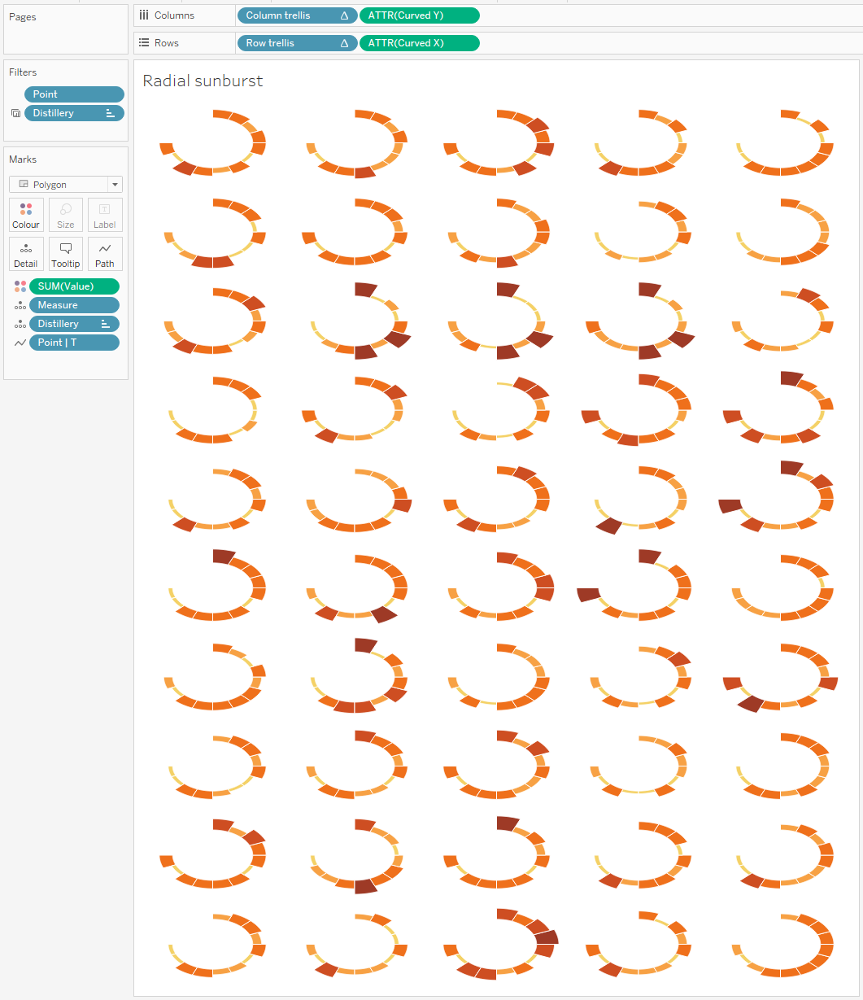
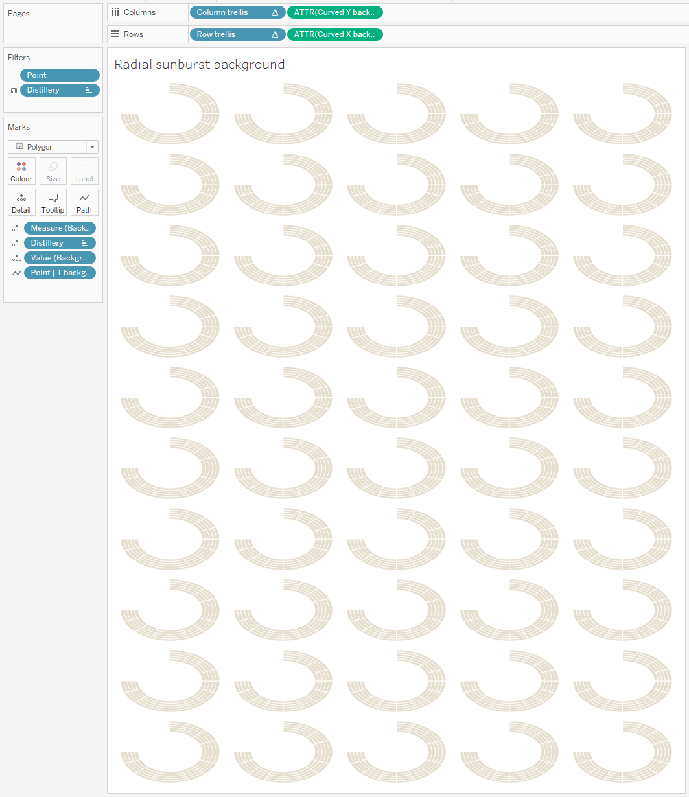
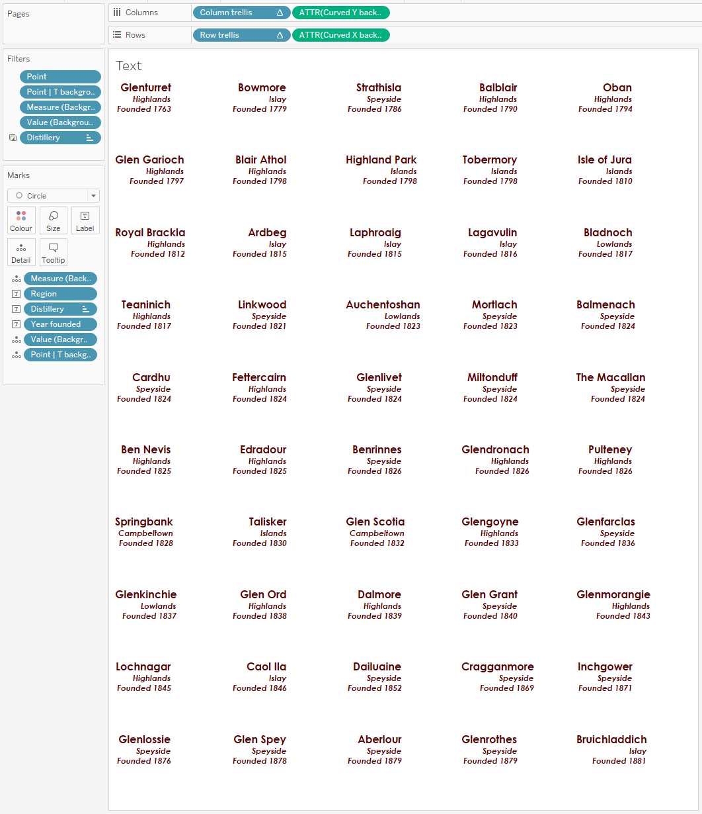
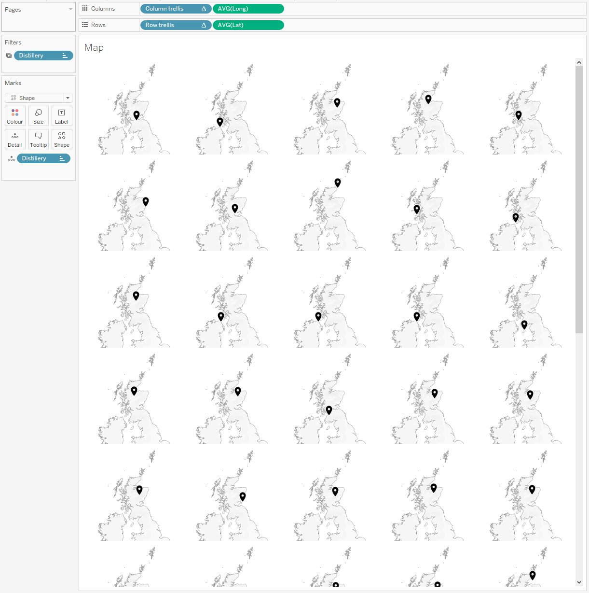

I live in Scotland which means drinking whisky is almost non-negotiable. The country is home to nearly 150 whisky distilleries, offering a great deal to the economy in both exports and tourism. When I moved to Scotland aged 18, whisky really wasn’t my thing. The complex flavours really weren’t right for my palette, but over time I’ve come to appreciate it far more.
Last year, I came across WhiskyAnalysis.com and their database of the flavour profiles of the world’s favourite whiskies. For each distillery, the prevalence of each of 12 flavours (I said the flavour was complex!) is rated with a score from 0 to 4. I thought this was the perfect opportunity for a poster style visualisation displaying the flavour profiles of Scotland’s oldest whiskies. In this blog I want to unpick this visualisation, sharing with you the how and why of the various elements.

Under the Hood
I knew early on when looking at the data that I wanted to display this in a radial format, with each radial being split into sections for each of the tasting notes. I wanted the sections to be thicker than with a radial bar chart, so polygons would be needed to plot each section. When dealing with polygons and radials, we need to add a few things in our data source to densify the data.
I did a lot of the data prep in Excel before opening Tableau to simplify the creation of the polygons. After creating multiple sketches, I knew the chart that I wanted to be able to recreate in Tableau, and could create co-ordinates in my dataset for the corners of each polygon.

Each section would need 4 points (numbered 1 to 4 in the sketch), with a different radius and angle depending on their position. Points 3 and 4 would always have the same radius, which points 1 and 2 would be scaled depending on the value. I applied this to the basic rules of trigonometry below to give me X and Y co-ordinates of each point of each segment.
X = [Radius] * SIN([Degrees in radians])
Y = [Radius] * COS([Degrees in radians])

Above is a screenshot of the resulting data for the first point for Glenturret. In Tableau, I joined this to a dummy file that forced the densification to enable the curved lines on each of the segments. To this was also joined one set of the polygon points for if a distillery rated 4 for all of the tasting notes. This would be used later to give us the background and reference lines for the radials. The final data model is shown below, with each of the joins relying on a link field equal to 1 for all rows.

A lot of the hard work for plotting the points was done in the backend which means there are very few calculations within the workbook. The calculations there are help to scale the difference between the corners of each polygon, applying the curve that I desired.
By bringing the Curved X and Curved Y fields into the view on columns and rows, and putting a combination of our points and the densified T values onto Path, the polygons take shape very quickly. I used trellis calculations to set rows and columns for a small multiple view. The result is shown below. I can’t remember a year later why I didn’t use map layers for this visualisation. I would like to say there was a reason, but it is just as likely that I added elements to the design as I went and didn’t backtrack to redesign the data as I went. Because of this, there are 4 worksheets in total. One gives us this radial sunburst view, one uses the full set of ratings to give the reference lines, another displays the text, and a final sheet contains the maps that form a backdrop on the whole visualisation.




The Analysis, Design, and Storytelling
If you’ve seen my other blog posts, you’ll know that I want to use this platform to explore the Iron Viz criteria of analysis, design, and storytelling in my dashboards. For this one, the nature of it means that the analysis and storytelling elements are relatively limited. The purpose of the dashboard was always going to be more for reference than offering any real analytical value. Maybe you know that you like a smoky whisky – your eye can be drawn to the trio of Ardbeg, Laphroaig, and Lagavulin on the third row. The story here is really that whatever your preference and personal taste, there is probably a whisky out there to meet it.
The design is really the main element in this visualisation. It’s this aspect that I enjoy the most, and it will likely be a recurring theme in these posts going forward as well. Let’s spend some time exploring the various design elements.
At the top of the page is a very bold title and a key. Flavour of Scotland is a play on Scotland’s national anthem, Flower of Scotland. The key offers some background information, and also a visual display of what each segment represents. In some ways I regret having the key at the top of the page. When viewing the dashboard on a computer it means you need to scroll a lot to remind yourself which segment is which. The header is also one background image with alt text. This is not an approach I’m as fond of anymore, and I would probably look to create a more dynamic key if I were to recreate the project.
The maps were a late addition, and they weren’t in my plans at all until I saw the finished dashboard without them and felt that something was missing. The space in the middle of each radial offered the perfect opportunity for additional context, and showing where in the country each distillery is gives a nice bit of additional information. Combining the radial sunburst and overlaying it with the reference charts creates a frosted glass effect that adds depth to the view. It looks as though the radial is floating somewhere way above the map.
The colour palette was always going to be something which reminded me of whisky. I opted for Tableau’s built in Orange-Gold diverging palette which took my mind straight to the various shades of whisky. The slightly off yellow background I felt gave the visualisation a rustic, old-world feel which was perfect for a visualisation with a latest date of 1881!
//
Overall, I am still really happy with how this visualisation came out. It matches the vision that I had for it, with some additional features that help elevate it. I think it would look great hanging on a wall, though I’ve not taken that step (yet!).
As I am finding with all of my visualisations as I revisit them, there is a lot that I would do differently here. Making the visualisation more interactive would be the main change, offering multiple ways to sort or group the distilleries perhaps. It would be nice to be able to see the different regions grouped together and identify any trends that there are in the flavour profiles across each region.
I’d love to know your thoughts on this visualisation. Feel free to download it from Tableau Public and investigate it yourself, or take the data and create your own version. Maybe, at the very least, it helps you find a new whisky that you fall in love with – Talisker was my favourite discovery after creating this!
Slainte! // Chris